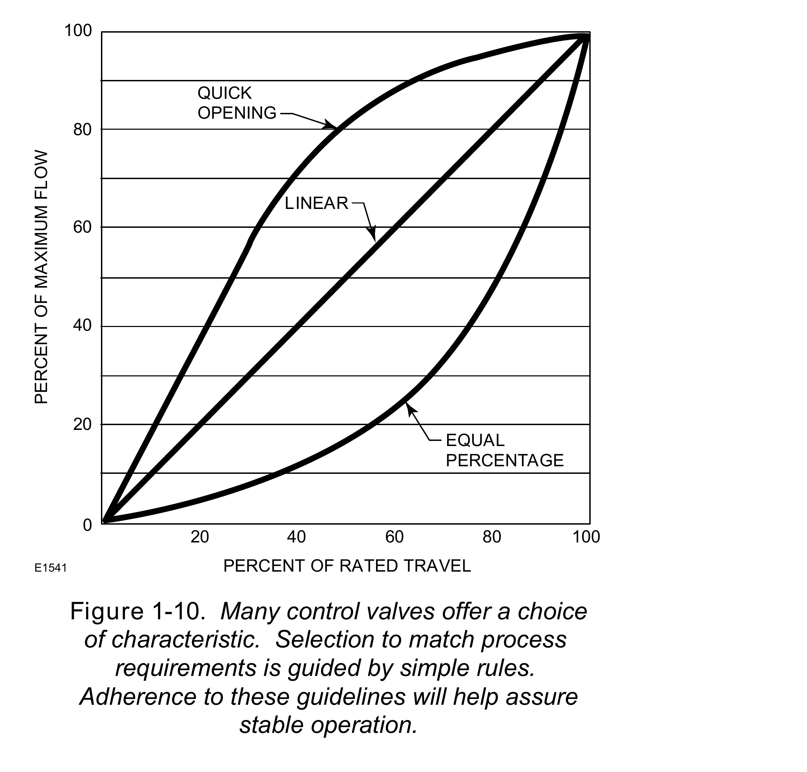

Selecting the Characteristic That Survives All Three Checks

- 1Read the pressure-drop ratio (slide 62) — predict how far this candidate's installed curve will drift from its inherent one
- 2Screen rangeability (slide 64) — reject a candidate whose rated rangeability can't clear the required turndown, even before distortion is considered
- 3Check the positioner — available to help close a gap, or ruled out here by its own frequency-response/phase-lag limit for this loop
The characteristic that survives all three checks — not the one with the best-looking inherent curve on the bench — is the one to specify.
After Fisher Control Valve Sourcebook — Oil & Gas, Fig. 1-10 — used directly, own printed curve labels retained; the near-duplicate of slide 64's Power & Severe Service figure, deliberately not repeated. Component Index: ogas-cmp-flow-characteristic-curves.